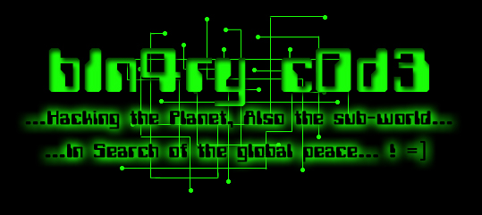

own "14You.NET"
b1n4ry c0d3 from World's Fantabulous "Defenders" own thuz shit =(... ps.: hey SysADM, I bkped your system =) ! 'cuz the Love Palestine Forever !
Nós só queremos que o
mundo tome consciência do que queremos dizer ! Nós queremos difundir a palavra e ter
certeza que todo o mundo saiba o que acontece em Israel, Primeiro lugar, quero dizer que
não sou contra qualquer religião. Só queremos que as pessoas saibam como aquelas
pessoas estão sofrendo! Guerras entre Mulçumanos e Judeus... E nisso como ficam as
crianças desses países? Seu brinquedo é uma arma ? O que estas crianças aprendem ?
Como se defender em uma guerra ? Matar pessoas inocentes ? Estuprar as mulheres ?
O que nós ganhamos com isto ? Nada mais que satisfação. Se nosso trabalho é esparramar as palavras nestes sites porcos, Vamos colocar algo que preste, Nao essas mesmas lamisses de sempre, aí sim podemos dizer que estamos contentes! críticas ? e-mail me ...
Greets:
Gforce Paquistan, Data Cha0s, Silver Lords, iz c0rp, prime suspectz, Break Bytes, Outras
saudações vão para todas as pessoas que defendem, que apoiam e que fazem algum tipo de
trabalho para esta causa !
World's Fantabulous
Defacers in search of the Global Awareness, members: b1n4ry c0d3, m0r0n, nightman,
CyBeRpUnK, Brake^Off, Be_Real, sUB-0, laughing3y3s, Sofh, hell raiser, Tå|{ê Ñø
£Øgîç ! paz@palestina.paz or b1n4ry@bol.com.br
"...HaCKiNG THe PLaNeT aLSo THe SuB-WoRLD, iN SeaRCH oF THe GLoBaL PeaCe..."
© 2k, ...BRAZIL...